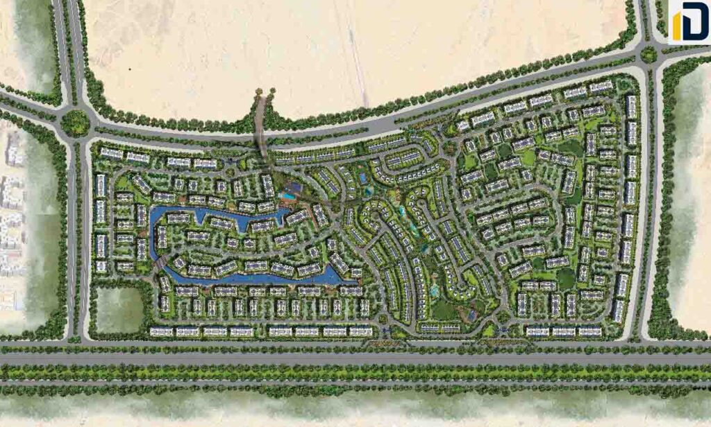
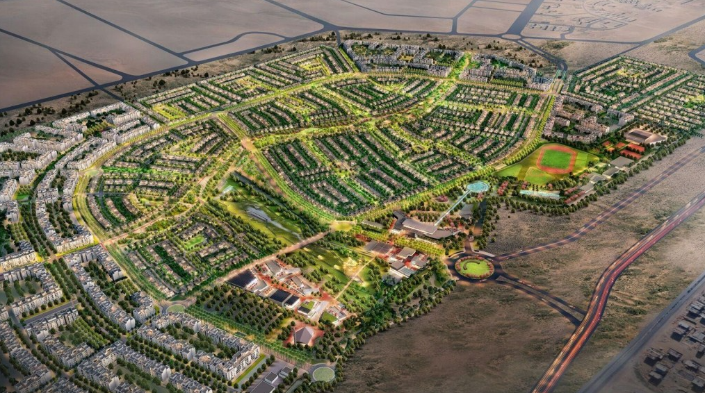
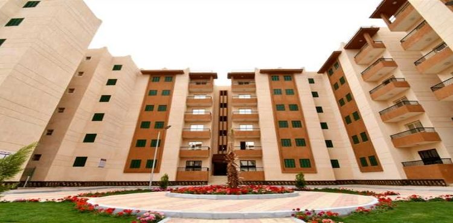
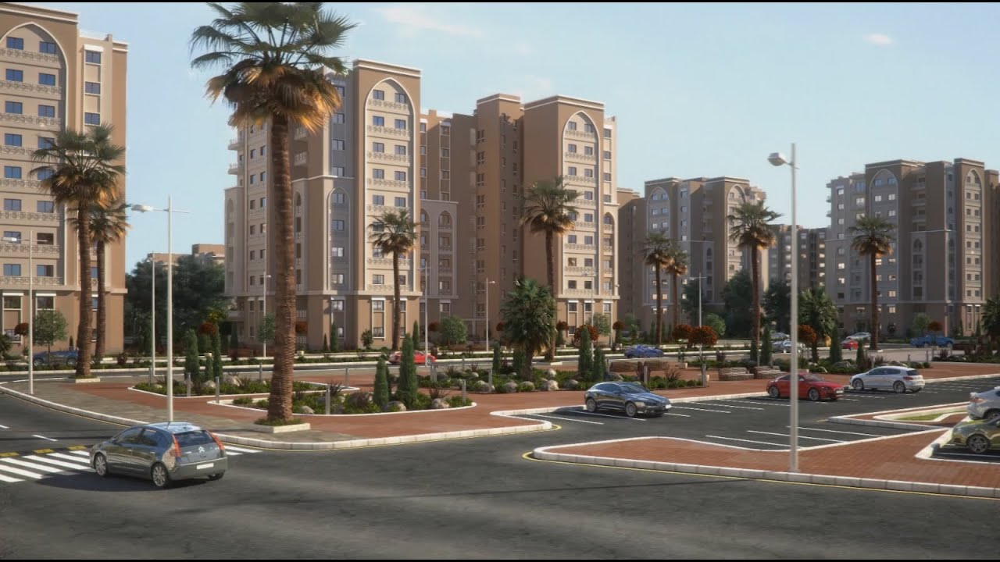
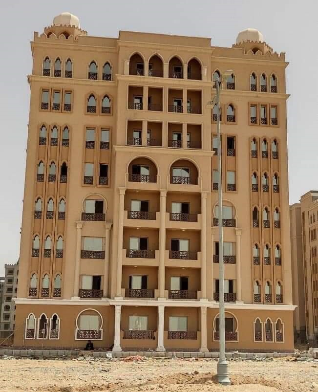

My Work
A collection of projects I've worked on and previous experience

Aliva Mountain View Project, Mostakbal City
Owner: Mountain View
Company Name: Farag Sultan Contracting and Transportation Establishment
Role: Technical Office Engineer, Site Engineer
Description:
• Responsible For The Preparation, Coordination, And Management Of All Technical Documentation And Processes Required To Support The Successful Execution Of Infrastructure, Roadworks, And Landscape Projects. This Role Bridges The Gap Between Design And Construction, Ensuring That Technical Submittals, Drawings, And Quantity Estimations Align With Project Specifications And Construction Requirements.
• Responsible For Ensuring The Successful Execution Of Construction Projects By Managing Daily Site Operations, Ensuring Compliance With Technical Drawings, And Coordinating With Various Stakeholders. My Role Involves Preparing And Reviewing Shop Drawings, Monitoring Soil Cutting And Leveling, Ensuring The Work Is Performed To The Correct Elevations And Levels As Per Design Specifications, And Maintaining Accurate Documentation For All Project Activities. I Work Closely With The Project Team, Contractors, And Consultants To Ensure All Construction Tasks Are Completed On Time, Within Budget, And To The Required Quality Standards.
Key Responsibilities:
• Prepare and review shop drawings, as-built drawings, and coordination drawings for roads, paving, curbstone, signage, landscape hardscape, and softscape elements.
• Conduct quantity take-offs and prepare BOQs based on approved drawings and specifications.
• Review project drawings, specifications, and contract documents to ensure compliance with technical requirements.
• Coordinate with site engineers and construction teams to ensure accurate implementation of designs.
• Assist in material submittals, method statements, and technical documentation.
• Track and manage RFIs, transmittals, and approvals from consultants or client representatives.
• Attend technical meetings and provide engineering support during project execution.
• Ensure adherence to quality, safety, and environmental standards on all engineering activities.
• Support project planning and scheduling activities with technical inputs.
Achievements:
• Successfully completed the substitution layers and concrete slab installation for the roundabout, ensuring proper foundation and structural integrity in line with project specifications.
• Led the construction and installation of the interlock pavement for the roundabout and an entire parcel of the project, enhancing the aesthetics and functionality of the area while adhering to quality standards.
• Oversaw and executed the construction of the asphalt road for a major roadway, ensuring smooth and durable road surfaces while meeting all project deadlines.
• Managed the installation of interlock paving for an entire parcel, ensuring seamless execution and high-quality finish, which contributed to the overall project’s timely completion.
• Spearheaded the repair and replacement of damaged interlock in a designated parcel, improving the area's safety and visual appeal while minimizing disruption to ongoing construction activities.
• Coordinated and completed the substitution layers for multiple roads across the project, ensuring consistency and precision in the foundation layers, which directly contributed to the durability and performance of the final road surfaces.

SODIC East New Heliopolis Project, El Shorouk
Owner: SODIC East Real Estate Development Company
Company Name: Farag Sultan Contracting and Transportation Establishment
Role: Technical Office Engineer, Site Engineer
Description:
• Responsible For The Preparation, Coordination, And Management Of All Technical Documentation And Processes Required To Support The Successful Execution Of Infrastructure, Roadworks, And Landscape Projects. This Role Bridges The Gap Between Design And Construction, Ensuring That Technical Submittals, Drawings, And Quantity Estimations Align With Project Specifications And Construction Requirements.
• Responsible For Ensuring The Successful Execution Of Construction Projects By Managing Daily Site Operations, Ensuring Compliance With Technical Drawings, And Coordinating With Various Stakeholders. My Role Involves Preparing And Reviewing Shop Drawings, Monitoring Soil Cutting And Leveling, Ensuring The Work Is Performed To The Correct Elevations And Levels As Per Design Specifications, And Maintaining Accurate Documentation For All Project Activities. I Work Closely With The Project Team, Contractors, And Consultants To Ensure All Construction Tasks Are Completed On Time, Within Budget, And To The Required Quality Standards.
Key Responsibilities:
• Prepare and review shop drawings, as-built drawings, and coordination drawings for roads, paving, curbstone, signage, landscape hardscape, and softscape elements.
• Conduct quantity take-offs and prepare BOQs based on approved drawings and specifications.
• Review project drawings, specifications, and contract documents to ensure compliance with technical requirements.
• Coordinate with site engineers and construction teams to ensure accurate implementation of designs.
• Assist in material submittals, method statements, and technical documentation.
• Track and manage RFIs, transmittals, and approvals from consultants or client representatives.
• Attend technical meetings and provide engineering support during project execution.
• Ensure adherence to quality, safety, and environmental standards on all engineering activities.
• Support project planning and scheduling activities with technical inputs.
Achievements:
• Successfully completed the substitution layers and concrete slab installation for the roundabout, ensuring proper foundation and structural integrity in line with project specifications.
• Led the construction and installation of the interlock pavement for the roundabout and an entire parcel of the project, enhancing the aesthetics and functionality of the area while adhering to quality standards.
• Oversaw and executed the construction of the asphalt road for a major roadway, ensuring smooth and durable road surfaces while meeting all project deadlines.
• Managed the installation of interlock paving for an entire parcel, ensuring seamless execution and high-quality finish, which contributed to the overall project’s timely completion.
• Spearheaded the repair and replacement of damaged interlock in a designated parcel, improving the area's safety and visual appeal while minimizing disruption to ongoing construction activities.
• Coordinated and completed the substitution layers for multiple roads across the project, ensuring consistency and precision in the foundation layers, which directly contributed to the durability and performance of the final road surfaces.

Social Housing Project in District 14, New Obour City
Owner: Urban Communities Authority
Company Name: Housing And Building National Research Center
Role: Consulting Engineer
Description:
• Responsible for ensuring that all construction activities are executed in accordance with design intent, contractual obligations, and industry standards. My role bridges the gap between the client, design teams, and contractors by providing technical oversight, quality assurance, and construction supervision throughout the project lifecycle.
• Responsible for overseeing carpentry, metalwork, and concrete pouring activities, I play a crucial role in ensuring that all construction tasks meet the required quality, safety, and design standards. My primary responsibility will be to monitor and guide the subcontractors and contractors in executing the works in accordance with the approved plans and specifications.
Key Responsibilities:
• Supervise and monitor construction activities to ensure they are executed in accordance with approved drawings, specifications, codes, and client requirements.
• Review and approve contractor submittals, including shop drawings, materials, method statements, and technical queries.
• Conduct regular site inspections and quality checks to verify compliance with design, workmanship standards, and safety regulations.
• Issue site instructions, non-conformance reports (NCRs), and observation reports when deviations from approved documents or quality standards are observed.
• Evaluate and monitor the contractor’s construction schedule, and report delays, risks, and required corrective actions.
• Oversee testing and commissioning processes to ensure that materials and systems meet project specifications and quality standards.
• Maintain accurate records of inspections, site activities, correspondence, and approvals.
• Assist with snagging, de-snagging, and final handover procedures, ensuring that all works are completed to satisfaction.
• Ensure that health, safety, and environmental (HSE) practices are implemented and maintained throughout the construction phase.
• Oversee and monitor all carpentry and metalwork activities on-site, ensuring that the works are executed according to approved plans, specifications, and standards. This includes checking the quality of materials, workmanship, and compliance with safety regulations.
• Supervise the process of concrete pouring, ensuring that it meets project requirements, including mix ratios, timing, and curing methods. Verify that the work is carried out in compliance with structural design specifications and industry best practices.
• Regularly communicate and collaborate with subcontractors and contractors handling carpentry, metalwork, and concrete works to ensure the timely and efficient completion of tasks. Address any issues or concerns that may arise during the construction process.
• Conduct frequent inspections of carpentry, metalwork, and concrete pouring activities, ensuring adherence to quality standards. Document findings and prepare reports on the progress, issues, and recommendations for corrective actions.
• Ensure all works comply with local building codes, regulations, and client requirements. Maintain accurate records of inspections, approvals, and any changes made to the original plans or designs.
• Identify and resolve any technical issues or discrepancies related to the carpentry, metalwork, or concrete works. Provide technical support and recommendations to contractors and other stakeholders.
• Ensure that all carpentry, metalwork, and concrete activities are carried out with a high standard of safety, and enforce compliance with health and safety regulations on-site.
• Track the progress of the works to ensure that the activities are completed on schedule. Provide regular updates to the project management team regarding any delays or obstacles that may affect the project timeline.
• Work closely with the design and architectural teams to address any issues or clarifications regarding the execution of carpentry, metalwork, and concrete-related elements in the project.
Achievements:
• Led the supervision of carpentry, metalwork, and concrete works across many residential zones, ensuring all construction tasks met quality standards, regulatory requirements, and project timelines.
• Managed and coordinated the supervision of construction activities across several residential zones, resulting in the timely and efficient completion of key tasks without compromising on quality or safety.
• Conducted rigorous inspections and quality control across multiple residential zones, maintaining consistent quality standards and resolving challenges across diverse project sites.
• Effectively supervised the work across multiple residential areas, ensuring alignment with the overall project timeline and minimizing delays, contributing to the on-time delivery of the development.
• Enhanced communication and collaboration among contractors working across different areas, ensuring smooth project flow and effective troubleshooting of issues that arose during construction.

R2 Residential Districts, New Administrative Capital (NAC)
Owner: Engineering Authority of the Egyptian Armed Forces
Company Name: El-Masrawyah Building & Construction
Role: Executive Engineer
Description:
• Contributed to the execution and coordination of construction works for the R2 residential districts one of the major zones in Egypt’s New Administrative Capital. Worked closely with site teams, consultants, and contractors to ensure high-quality delivery of structural, civil, and infrastructure components for residential buildings and supporting utilities.
• Responsible For 12 Residential Building overseeing all technical aspects from foundation to completion. My responsibilities included coordinating with architects, contractors, and stakeholders, ensuring that construction adhered to approved designs, and performing regular quality and safety inspections. I also managed resources, tracked project progress, and resolved engineering challenges to ensure timely, cost-effective, and high-quality project delivery while maintaining compliance with safety and environmental standards.
Key Responsibilities:
• Supervised daily site operations, including structural and finishing works for multi-story residential buildings.
• Assisted in the review and implementation of construction drawings and technical specifications.
• Coordinated with subcontractors and suppliers to ensure timely delivery of materials and resources.
• Monitored compliance with safety, quality, and environmental standards across assigned work areas.
• Prepared daily and weekly progress reports and submitted updates to the project management team.
• Participated in technical meetings and site inspections with consultants and client representatives.
• Supported quality control and snagging activities during handover phases.
Achievements:
• Successfully contributed to the completion of key phases in R2 involving 12 Residential Building near New capital English school.
• Improved site productivity by streamlining material handling and labor coordination in assigned zones.
• Maintained high standards of site safety and compliance, contributing to a zero-incident record during tenure.
• Earned recognition from site management for proactive issue resolution and attention to construction detail.

R1 / R2 Residential Districts, New Administrative Capital (NAC)
Owner: Engineering Authority of the Egyptian Armed Forces
Company Name: Al-Maraj Building & Construction
Role: Executive Engineer
Description:
• Contributed to the execution and coordination of construction works for the R2 residential districts one of the major zones in Egypt’s New Administrative Capital. Worked closely with site teams, consultants, and contractors to ensure high-quality delivery of structural, civil, and infrastructure components for residential buildings and supporting utilities.
• Responsible For 11 Residential Building in Total in R1 / R2 overseeing all technical aspects from foundation to completion. My responsibilities included coordinating with architects, contractors, and stakeholders, ensuring that construction adhered to approved designs, and performing regular quality and safety inspections. I also managed resources, tracked project progress, and resolved engineering challenges to ensure timely, cost-effective, and high-quality project delivery while maintaining compliance with safety and environmental standards.
Key Responsibilities:
• Lead and manage the execution of building construction projects from planning to completion, ensuring compliance with design specifications, budget, and schedule.
• Coordinate with consultants, contractors, suppliers, and stakeholders to ensure smooth project execution and effective communication across all phases.
• Review and approve structural, architectural, and MEP drawings and specifications before and during execution.
• Supervise site activities to ensure compliance with approved drawings, construction standards, and quality control procedures.
• Evaluate contractor performance, quality of workmanship, and adherence to contract terms.
• Oversee the preparation and review of material submittals, method statements, and work programs.
• Prepare and present progress reports, cost updates, and project status to senior management or client representatives.
• Ensure accurate documentation of all project records, including site reports, test results, approvals, and correspondence.
Achievements:
• Successfully contributed to the completion of key phases in R1/R2 involving 11 Residential Building.
• Improved site productivity by streamlining material handling and labor coordination in assigned zones.
• Maintained high standards of site safety and compliance, contributing to a zero-incident record during tenure.
• Earned recognition from site management for proactive issue resolution and attention to construction detail.
Skills and Competencies
• Strong knowledge of construction methods and materials.
• Proficient in the use of surveying equipment and software to measure and document site levels.
• Excellent communication skills, with the ability to interact with clients, consultants, and contractors.
• Ability to prepare detailed progress reports, material requests, and work orders.
• Knowledge of safety standards and regulations within the construction industry.
• Strong problem-solving skills, with the ability to address challenges on-site quickly and efficiently.
Engineering & Design Software
• AutoCAD (2D & 3D)
• Autodesk Civil 3D
• Revit
• Sokkia Surveying Programs
Project Management & Documentation
• Microsoft Office Suite (Excel, Word, PowerPoint)
• Microsoft Project / Primavera P6
• Document control
Technical Engineering Skills
• Preparation of Shop Drawings & As-Built Drawings
• Quantity Surveying & TakeOffs
• Material Submittals & Technical Reports
• Method Statement Preparation
• RFI & Transmittal Management
• Knowledge of construction codes and standards
Site & Construction Knowledge
• Roads and Infrastructure Detailing (pavement layers, curbstones, road marking, signage)
• Hardscape Works (paving, interlock, street furniture)
• Site Execution Coordination & Technical Support
• Technical Support Construction Sequence Planning
• QA/QC Coordination and Inspection Support
Programming Languages:
Python and Some Degree of Knowledge with JavaScript, C and Java
Others:
HTML, CSS, SQL
Certifications & Courses
• AutoCAD / Civil 3D Advanced Training – YouTube
• BIM Fundamentals for Engineers Coursera
• BIM Application for Engineers Coursera
• Learning How to Learn: Powerful mental tools to help you master tough subjects – Coursera
• Learn to Program: The Fundamentals – Coursera
• CS50’s Introduction to Programming with Python HarvardX (CS50P) – Completed with Final Project
• CS50’s Introduction to Computer Science – HarvardX (CS50X) Completed with Final Project.
Additional Information
• All Courses Certificate and Experience Certificate are Available on my LinkedIn Account